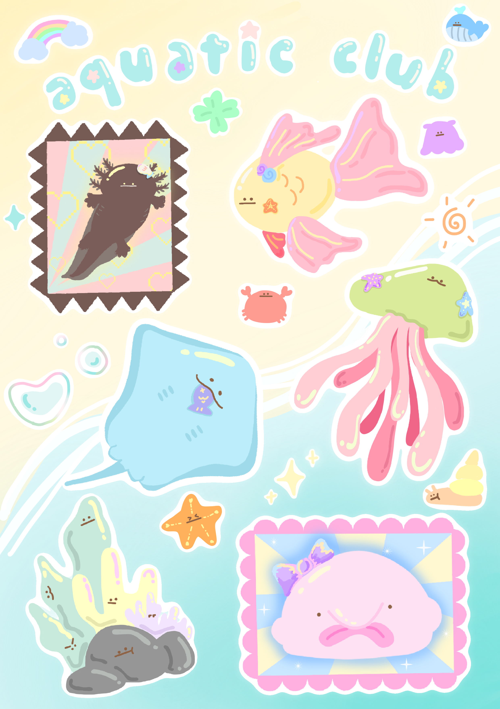
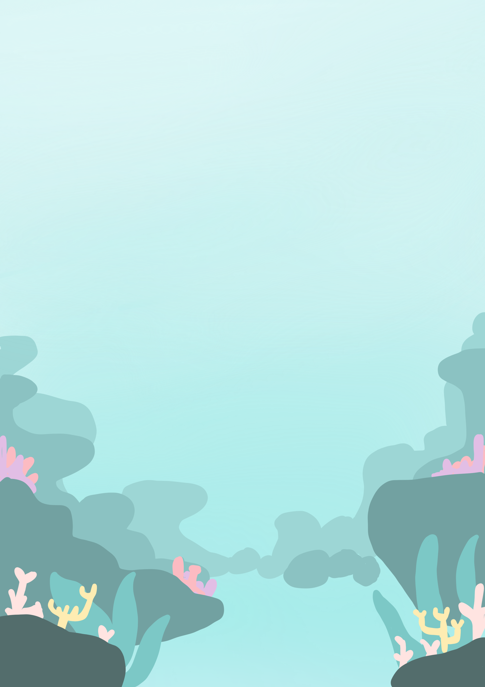

AQUATIC CLUB

WHAT'S YOUR
AQUATIC SOUL?🫧
ค้นหาสิ่งมีชีวิตใต้ทะเลที่เหมือนคุณที่สุด
วันหนึ่งคุณเดินเข้าไปในอควาเรียมแห่งหนึ่ง...
ที่นั่นมีสัตว์น้ำหลากหลายสายพันธุ์กำลังว่ายน้ำอย่างมีความสุข
คุณกำลังเพลิดเพลินกับการเดินชมตู้ปลาทีละตู้ทีละตู้...
จู่ๆ คุณก็เห็นกล่องสมบัติปริศนาเปล่งแสงอยู่ตรงมุมของตู้ปลา!
คุณจ้องมองมัน และจู่ๆ ก็เกิดแสงสว่างวาบขึ้นมาปกคลุมตัวคุณ!
รู้ตัวอีกที... คุณก็มาโผล่ที่ใต้น้ำซะแล้ว!
📜 จดหมายถึงนักสำรวจผู้ค้นพบสมบัติอันล้ำค่า:
“ว่าไงสหาย! ยินดีด้วย! คุณคือผู้โชคดีได้รับสิทธิพิเศษในการเป็นสัตว์น้ำ 1 วัน ก่อนตะวันจะลับหายไปจากเส้นขอบฟ้า จงออกไปใช้ชีวิต แล้วมาดูกันว่าคุณจะเป็นสัตว์น้ำแบบไหน ฮ่าๆๆ”
- จากโจรสลัดสหายแห่งผืนน้ำ 🏴☠️

AQUATIC CLUB
YOUR AQUATIC SOUL IS...
CHAR NAME
The Soft Soul
Description text...
“Quote goes here”
🩺 Vet Fact